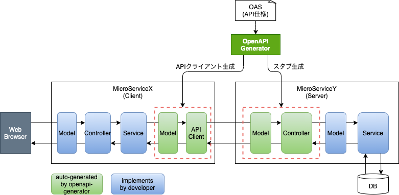

OpenAPI¶
# OpenAPI Specification¶
- OpenAPI Specification(OAS)とは、REST APIのインタフェースを記述するための標準規格
- 本資料を執筆した2021/05/05時点での最新バージョンは3.1.0（公式サイトでは3.0.3だがGithub上は3.1.0）
- OASはjsonまたはyamlで記述される
# OpenAPI generator¶
- OASファイルから様々な言語のAPIクライアント、スタブサーバを生成するツール
# アーキテクチャ¶
# 動作環境¶
- 自端末のローカル環境で動作検証を行った。各種バージョンは以下の通り。
- macOS Catalina 10.15.7
- Java 11.0.5
- Apache Maven 3.8.1
- springboot 2.4.5
- openapi-generator-cli 5.1.0
# OASサンプル¶
- IDを渡すとポケモンオブジェクトを返すAPIを想定し、pokemon.yamlを作成
- OAS ファイルの記述ルールは、OpenAPI3.0仕様書（https://swagger.io/specification/）を参照
pokemon.yaml
openapi: '3.0.3'
info:
title: PokemonAPI
version: '1.0'
servers:
- url: https://api.server.test/v1
paths:
/pokemons/{id}:
get:
description: "Get a pokemon by ID"
parameters:
- name: "id"
in: "path"
schema:
type: string
description: Numeric ID of the user to get
required: true
responses:
"200":
description: OK
content:
application/json:
schema:
type: "object"
properties:
id:
type: "string"
name:
type: "string"
type:
type: "string"
comment:
type: "string"
operationId: get-pokemon-by-id
# MicroServiceX（Client）¶
★作成中
# MicroServiceY（Server）¶
プロジェクト構成¶
openapi-demo
├ src/main/java/com/enomoso/openapidemo
│ ├ config #[1]
│ ├ controller #[2]
│ ├ model #[3]
│ └ generated/server #[4]
├ openapi-generator.sh #[5]
├ pokemon.yaml #[6]
├ …
└ pom.xml
[1]コンフィグクラスを配置するところ
[2]コントローラ（実装クラス）を配置するところ
[3]OpenAPI Generatorで生成する以外のModelクラスを配置するところ
[4]OpenAPI Generatorで生成するクラスを配置するところ
[5]OpenAPI Generatorを実行するシェル
[6]OASファイル
OpenAPI Generatorを実行するシェル¶
openapi-generator.sh#!/bin/sh OUT=. openapi-generator generate \ -i ./pokemon.yml \ #[1] -o ${OUT}/ \ #[2] --api-package com.enomoso.openapidemo.generated.server.controller \ #[3] --model-package com.enomoso.openapidemo.generated.server.model \ #[4] -g spring \ #[5] --library spring-boot \ #[6] -p interfaceOnly=true \ #[7] -p dateLibrary=java8 #[8][1]インプットになるOASファイル（API仕様書）[2][3]Controllerインタフェースクラスを出力するjavaパッケージ[4]Modelクラスを出力するjavaパッケージ[5][6][7][8]
自動生成クラス¶
使われないライブラリをインポートしている警告が出るが無視。
自動生成クラスには手をつけない。必ずOASから出力したまま。
src/main/java/com/enomoso/openapidemo/generated/server/controller/PokemonsApi.java (Controllerインタフェースクラス)- インタフェースクラスのため、開発者が実装クラスを作成する必要がある
- defaultメソッドが出力されるが、501(NOT_IMPLEMENTED)が返却される
/** * NOTE: This class is auto generated by OpenAPI Generator (https://openapi-generator.tech) (5.1.0). * https://openapi-generator.tech * Do not edit the class manually. */ package com.enomoso.openapidemo.generated.server.controller; import com.enomoso.openapidemo.generated.server.model.InlineResponse200; import io.swagger.annotations.*; import org.springframework.http.HttpStatus; import org.springframework.http.MediaType; import org.springframework.http.ResponseEntity; import org.springframework.validation.annotation.Validated; import org.springframework.web.bind.annotation.*; import org.springframework.web.context.request.NativeWebRequest; import org.springframework.web.multipart.MultipartFile; import springfox.documentation.annotations.ApiIgnore; import javax.validation.Valid; import javax.validation.constraints.*; import java.util.List; import java.util.Map; import java.util.Optional; @javax.annotation.Generated(value = "org.openapitools.codegen.languages.SpringCodegen", date = "2021-05-05T16:23:13.017292+09:00[Asia/Tokyo]") @Validated @Api(value = "pokemons", description = "the pokemons API") public interface PokemonsApi { default Optional<NativeWebRequest> getRequest() { return Optional.empty(); } /** * GET /pokemons/{id} * Get a pokemon by ID * * @param id Numeric ID of the user to get (required) * @return OK (status code 200) */ @ApiOperation(value = "", nickname = "getPokemonById", notes = "Get a pokemon by ID", response = InlineResponse200.class, tags={ }) @ApiResponses(value = { @ApiResponse(code = 200, message = "OK", response = InlineResponse200.class) }) @GetMapping( value = "/pokemons/{id}", produces = { "application/json" } ) default ResponseEntity<InlineResponse200> getPokemonById(@ApiParam(value = "Numeric ID of the user to get",required=true) @PathVariable("id") String id) { getRequest().ifPresent(request -> { for (MediaType mediaType: MediaType.parseMediaTypes(request.getHeader("Accept"))) { if (mediaType.isCompatibleWith(MediaType.valueOf("application/json"))) { String exampleString = "{ \"name\" : \"name\", \"comment\" : \"comment\", \"id\" : \"id\", \"type\" : \"type\" }"; ApiUtil.setExampleResponse(request, "application/json", exampleString); break; } } }); return new ResponseEntity<>(HttpStatus.NOT_IMPLEMENTED); } }
Note
上記のシェルを実行し、コントローラインタフェースクラスを自動生成すると、同時にpom.xmlがスタブサーバ用に書き換えられてしまう。初回生成が完了したら、.openapi-generator-ignoreにpom.xmlを追記することが望ましい。そうしないと毎回pom.xmlを書き換えられ、コンパイルエラーがあちこちで発生する。
# コードサンプル¶
参考までにサンプルプログラムを載せる。
# 参考文献¶
OpenAPI generator インストール手順
Swagger generatorあれこれ